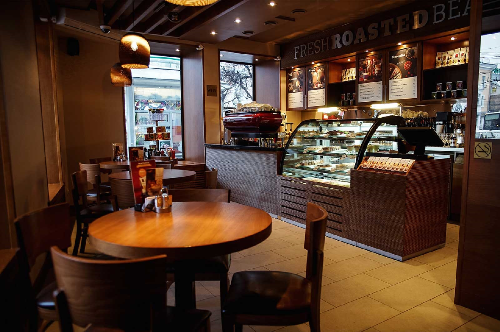

Добро пожаловать в нашу кофейню!
Мы используем только свежие и качественные сорта кофе,обжаривая их с любовью.

See all


Популярные виды кофе

Эспрессо — это не степень обжарки, не маленький кофейный
Название напитка связано с орденом капуцинов — монахов, носивших рясы красно-коричневого цвета.
Раф был придуман в России в результате экспериментов в московской кофейне «Coffee Bean» в 1996–1997 году.